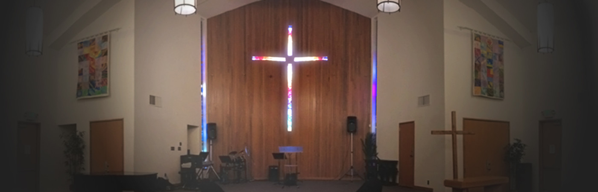

This is some more things about me.(If you would like to skip reading about my religion, then jump to chores
My religion is Christianity. I go to San Jose Christian Alliance Church.
It is a great church. I am part of the Youth Servant Leadership and is in charge of the Audio and Visual part.
I really like serving and helping out at church. The people at church are really nice and friendly. They are very hospitable is a way to put it. I also teach Sunday School to the Pre-K and Kindergarten kids. They are very cute and teaching is fun and difficult. I really enjoy going to church. My church website is here
This is the alliance logo
This is my church 
I have two main chores. Which is taking out the trash and vacuuming/steaming. I will be call when the my parents need the trash taken out. I also have to vacuum, but not as regularly as throwing out trash. I now have to mop less because my mom bought this automatic mopping robot. It is like the Roomba but it mops. I still need to set it up and clean the rag afterwards, but it is a lot easier than steam mopping.